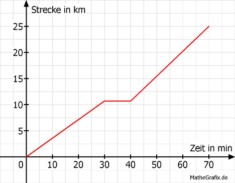

Lineare Funktionen Aufgabe 65 Zu einem Badesee führen zwei Wege, der eine ist 25 km, der andere 40 km lang. Ein Junge und ein Mädchen benutzen auf ihrer Fahrt zum See den kürzeren Weg. Das Mädchen braucht mit dem Fahrrad 70 Minuten. Der Junge hat ein Mofa, das 30 km/h fährt. a) Berechnen Sie die durchschnittliche Geschwindigkeit des Mädchens in km/h. b) Wie viel Minuten kann der Junge später losfahren, um gleichzeitig mit dem Mädchen einzutreffen? c) Nach 30 Minuten macht das Mädchen eine Pause von 10 Minuten. Um die Zeit aufzuholen, fährt sie den Rest der Strecke schneller. Wie lautet die Gleichung der Geraden für diesen Abschnitt? (Strecke s in Abhängigkeit von der Zeit t) d) Wie viel Minuten später hätte das Mädchen mit der höheren Geschwindigkeit und ohne Pause losfahren können? e) Mit welcher Geschwindigkeit in km/h muss ein Auto auf der längeren Strecke fahren, wenn es 45 Minuten später losfuhr aber zur selben Zeit ankommen will? a) 25 * 60 v = --------- = 21,4 km/h 70 b) Der Junge braucht für die Strecke: 25 km * 60 min/h t = ------------------- = 50 Minuten 30 km/h Er kann 70 Minuten - 50 Minuten = 20 Minuten später losfahren. c)  Das Mädchen legt in 30 Minuten = 0,5 h s = 21,4 km/h * 0,5 h = 10,7 km zurück. 2 Punkte abgelesen: P1(40|10,7); P2(70|25) x1 y1 x2 y2 25 - 10,7 14,3 m = ---------- = ------- = 0,477 70 - 40 30 25 = 0,477 * 70 + b 25 = 33,4 + b |-33,4 b = - 8,4 s = 0,477 * t - 8,4 d) Bis zum Beginn der Pause hat das Mädchen 10,7 km zurückgelegt. Für die restlichen 25 km - 10,7 km = 14,3 km hat sie 30 Minuten = 0,5 h Zeit. 14,3 km v = ---------- = 28,6 km/h 0,5 h 25 km t = ------------- = 0,874 h = 0,874 * 60 Minuten = 52,4 Minuten. 28,6 km/h Sie hätte 70 Minuten - 52,4 Minuten = 17,6 Minuten später losfahren können. e) Das Auto muss die Strecke in 70 Minuten - 45 Minuten = 25 Minuten schaffen. 40 * 60 v = ---------- km/h = 96 km/h. 25